Metodología
Se seleccionaron aleatoriamente 5 registros por aseguradora (25 en total), con diversidad forzada en especialidades y municipios. Para cada muestra se muestra:
1. Evidencia — Imagen de la página del PDF original (o extracto de texto para los PDFs con texto extraíble).
2. Registro normalizado — Todos los campos del SQLite tras extracción, normalización y enriquecimiento.
3. Contribución a KPIs — Qué métricas del dashboard se ven afectadas por este registro.
4. Checks de coherencia — Validaciones automáticas que deberían cumplirse.
Este reporte se genera con scripts/generate_audit.py contra la base SQLite.
Para validar manualmente: abrir el PDF en la página indicada y comparar con el registro extraído.
ASISA
5 muestras — Cuadro medico ASISA Asturias.pdfMuestra #1: DR. GONCALVES LOSA Carlos A
📄 Evidencia (fuente)
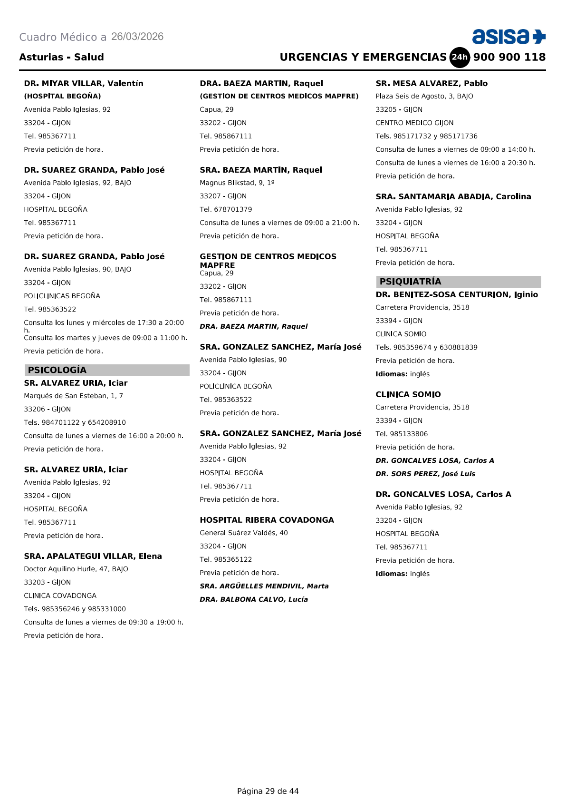
🗂 Registro normalizado (SQLite)
goncalves losa carlos ahospital begonagoncalves losa carlos a|Salud Mentalgoncalves losa carlos agoncalves losa carlos a|Salud Mental📊 Contribución a KPIs del dashboard
goncalves losa carlos a|Salud Mental)Muestra #2: DR. RAMOS RODRIGUEZ Santiago
📄 Evidencia (fuente)
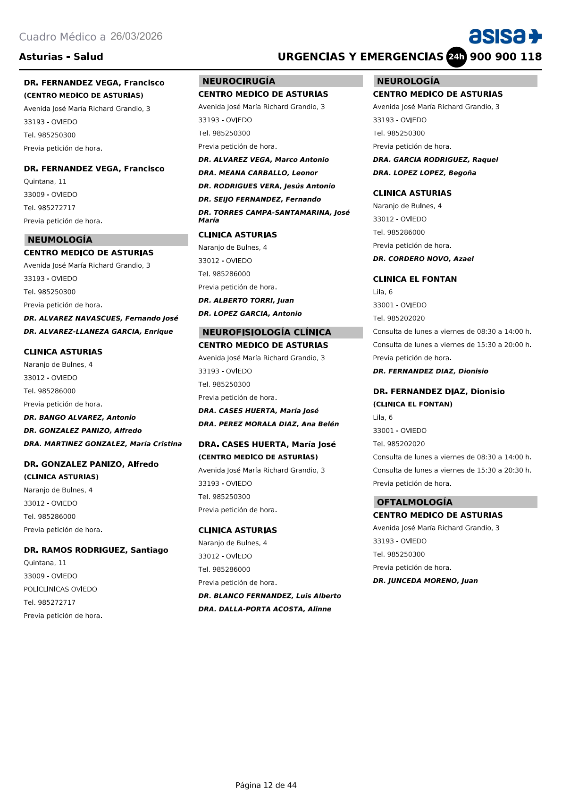
🗂 Registro normalizado (SQLite)
ramos rodriguez santiagopoliclinica oviedoramos rodriguez santiago|Neumologíaramos rodriguez santiagoramos rodriguez santiago|Neumología📊 Contribución a KPIs del dashboard
ramos rodriguez santiago|Neumología)Muestra #3: SRA. CARRAL LLANO Maria Soledad
📄 Evidencia (fuente)
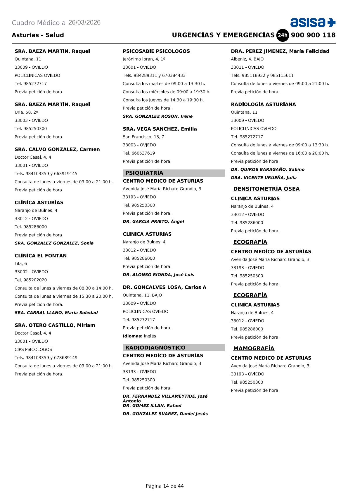
🗂 Registro normalizado (SQLite)
a carral llano maria soledadclinica el fontana carral llano maria soledad|Salud Mentala carral llano maria soledada carral llano maria soledad|Salud Mental📊 Contribución a KPIs del dashboard
a carral llano maria soledad|Salud Mental)Muestra #4: DR. FEJOO GOMEZ Carlos
📄 Evidencia (fuente)
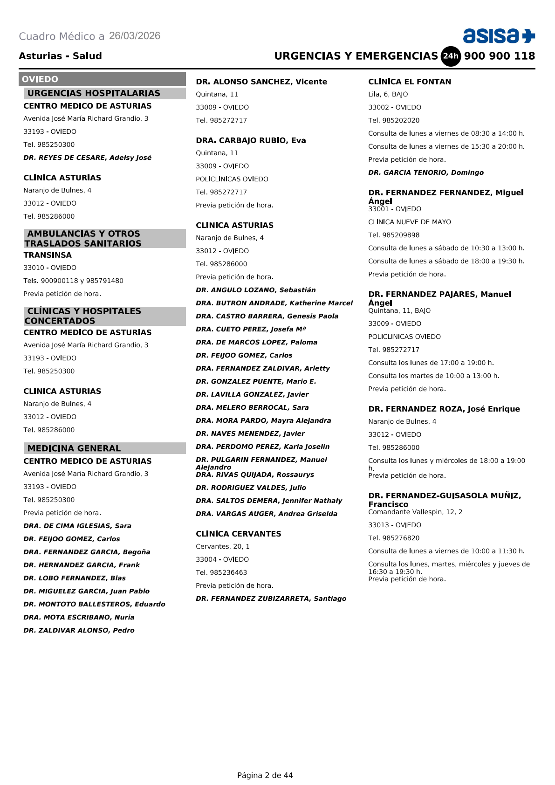
🗂 Registro normalizado (SQLite)
fejoo gomez carlosclinica cervantesfejoo gomez carlos|Medicina Generalfejoo gomez carlosfejoo gomez carlos|Medicina General📊 Contribución a KPIs del dashboard
fejoo gomez carlos|Medicina General)Muestra #5: DR. GONZALEZ FERNANDEZ Jesus
📄 Evidencia (fuente)
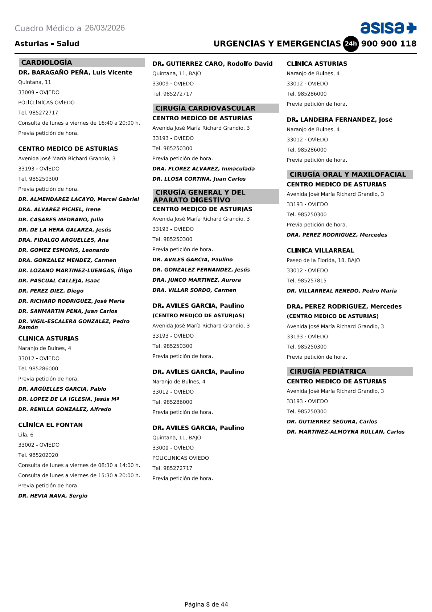
🗂 Registro normalizado (SQLite)
gonzalez fernandez jesuscentro medico de asturiasgonzalez fernandez jesus|Cirugía Generalgonzalez fernandez jesusgonzalez fernandez jesus|Cirugía General📊 Contribución a KPIs del dashboard
gonzalez fernandez jesus|Cirugía General)Mapfre
5 muestras — Cuadro medico Mapfre Asturias.pdfMuestra #6: Dr. Ocio Fernandez German
📄 Evidencia (fuente)
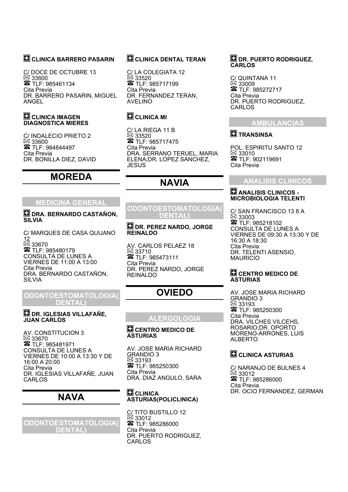
🗂 Registro normalizado (SQLite)
ocio fernandez germanclinica asturiasocio fernandez german|Alergologíaocio fernandez germanocio fernandez german|Alergología📊 Contribución a KPIs del dashboard
ocio fernandez german|Alergología)Muestra #7: Sra. Fernandez Gonzalez Rosalia
📄 Evidencia (fuente)
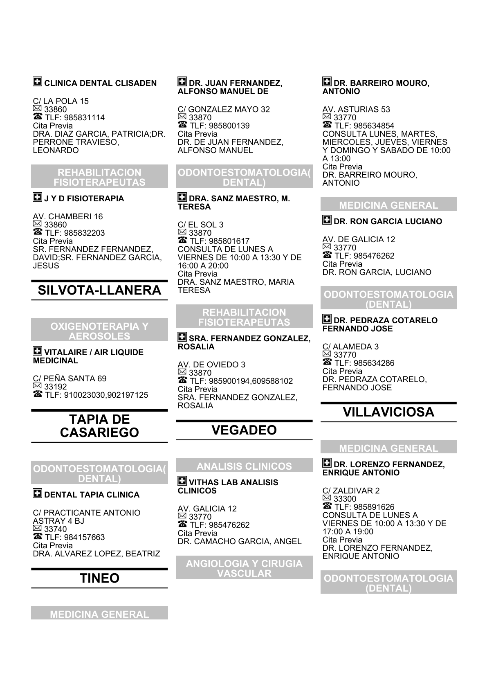
🗂 Registro normalizado (SQLite)
a fernandez gonzalez rosaliaconsultorioa fernandez gonzalez rosalia|Rehabilitacióna fernandez gonzalez rosaliaa fernandez gonzalez rosalia|Rehabilitación📊 Contribución a KPIs del dashboard
a fernandez gonzalez rosalia|Rehabilitación)Muestra #8: Dra. Fernandez Lopez Belen
📄 Evidencia (fuente)

🗂 Registro normalizado (SQLite)
a fernandez lopez belenconsultorioa fernandez lopez belen|Odontología/Maxilofaciala fernandez lopez belena fernandez lopez belen|Odontología/Maxilofacial📊 Contribución a KPIs del dashboard
a fernandez lopez belen|Odontología/Maxilofacial)Muestra #9: Dr. Cabanillas Farpón Ruben;Dra. Fueto Diaz Maria;Dr. Mendez Blanco Laura;Dra. Marton Lordi
📄 Evidencia (fuente)
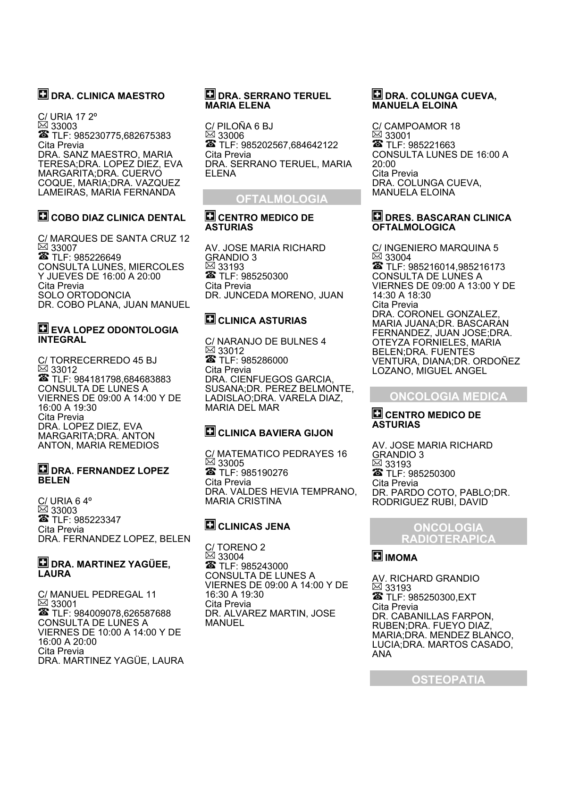
🗂 Registro normalizado (SQLite)
cabanillas farpon rubenimomacabanillas farpon ruben|Oncologíacabanillas farpon rubencabanillas farpon ruben|Oncología📊 Contribución a KPIs del dashboard
cabanillas farpon ruben|Oncología)Muestra #10: Dra. Gutierrez Jimenez Ana
📄 Evidencia (fuente)
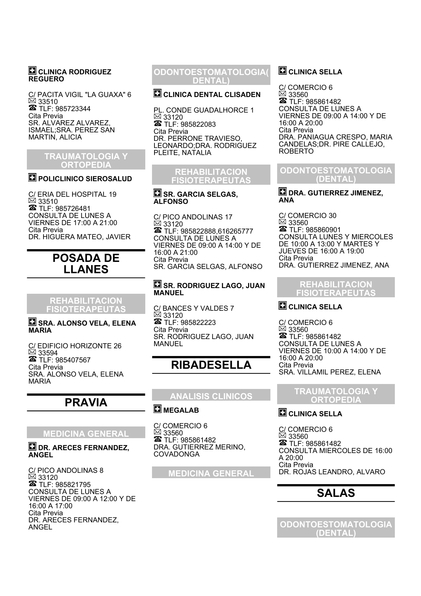
🗂 Registro normalizado (SQLite)
a gutierrez jimenez anaconsultorioa gutierrez jimenez ana|Odontología/Maxilofaciala gutierrez jimenez anaa gutierrez jimenez ana|Odontología/Maxilofacial📊 Contribución a KPIs del dashboard
a gutierrez jimenez ana|Odontología/Maxilofacial)Sanitas
5 muestras — Cuadro medico Sanitas Asturias (1).pdfMuestra #11: Dr. Pedraza Cotarelo, Fernando Jose
📄 Evidencia (fuente)
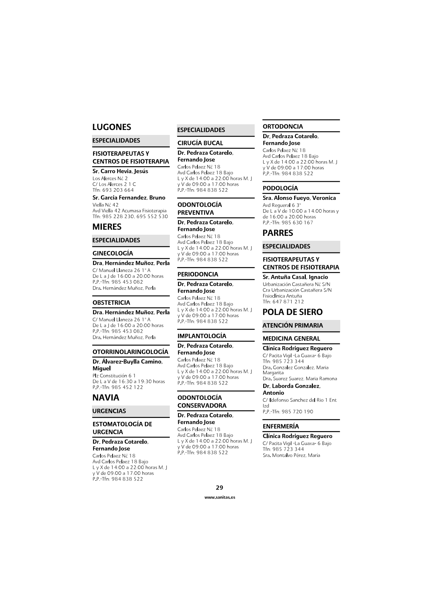
🗂 Registro normalizado (SQLite)
pedraza cotarelo fernando josepedraza cotarelo fernando jose|Odontología/Maxilofacialpedraza cotarelo fernando josepedraza cotarelo fernando jose|Odontología/Maxilofacial📊 Contribución a KPIs del dashboard
pedraza cotarelo fernando jose|Odontología/Maxilofacial)Muestra #12: Sra. Esteban Mera, Veronica
📄 Evidencia (fuente)

🗂 Registro normalizado (SQLite)
a esteban mera veronicaa esteban mera veronica|Podologíaa esteban mera veronicaa esteban mera veronica|Podología📊 Contribución a KPIs del dashboard
a esteban mera veronica|Podología)Muestra #13: Dr. Baregano Peha, Luis Vicente
📄 Evidencia (fuente)
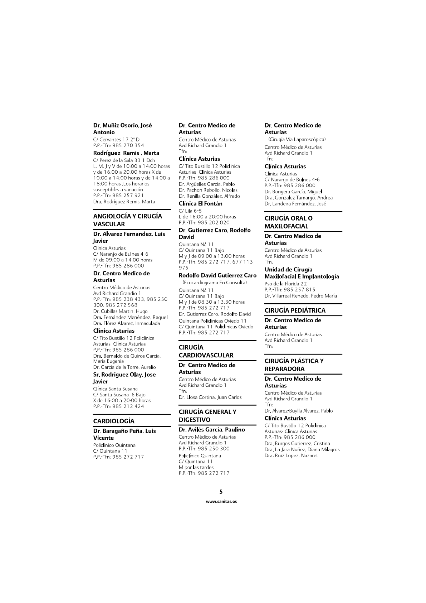
🗂 Registro normalizado (SQLite)
baregano peha luis vicentebaregano peha luis vicente|Cardiologíabaregano peha luis vicentebaregano peha luis vicente|Cardiología📊 Contribución a KPIs del dashboard
baregano peha luis vicente|Cardiología)Muestra #14: Dr. Fernandez Suarez, Hilario Javier
📄 Evidencia (fuente)
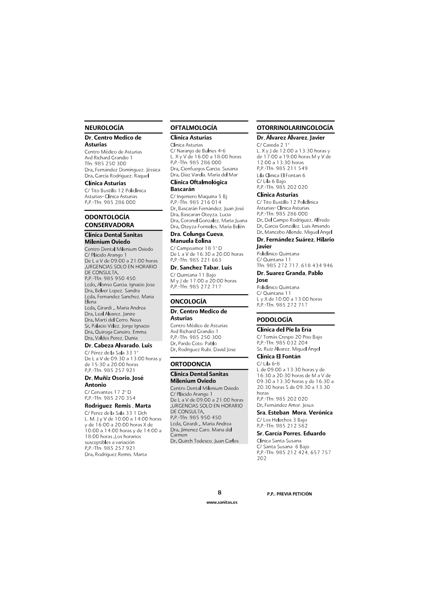
🗂 Registro normalizado (SQLite)
fernandez suarez hilario javierfernandez suarez hilario javier|Otorrinolaringologíafernandez suarez hilario javierfernandez suarez hilario javier|Otorrinolaringología📊 Contribución a KPIs del dashboard
fernandez suarez hilario javier|Otorrinolaringología)Muestra #15: Sr. Perez Alvarez, Martin
📄 Evidencia (fuente)
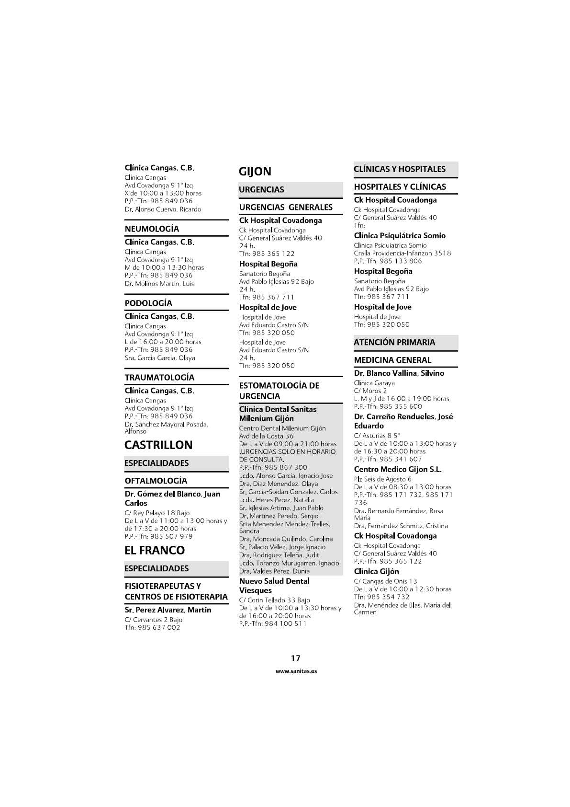
🗂 Registro normalizado (SQLite)
perez alvarez martinperez alvarez martin|Rehabilitaciónperez alvarez martinperez alvarez martin|Rehabilitación📊 Contribución a KPIs del dashboard
perez alvarez martin|Rehabilitación)Adeslas
5 muestras — Cuadro medico Adeslas Asturias.pdfMuestra #16: GARCÍA ACERO, Azucena
📄 Evidencia (fuente)
=== PAGINA 29 === Gijón FERNÁNDEZ TABUYO, María Dolores TRIANA DURÁN, Ángela Rosa Avda. Pablo Iglesias, 90 Avda. José Manuel Palacio Álvarez, 10 Teléfono 985 36 35 22 Teléfono 985 23 10 10 Consulta de lunes a viernes Consulta previa petición de 8,30 a 11,30 VÁZQUEZ DE PRADA GONZÁLEZ, Ignacio Javier FIGAREDO PIDAL, Juan Santa Doradía, 4 Cabrales, 72 - 4º - Oficina 7 Teléfono 985 35 04 04 Teléfonos 985 34 52 47 - 607 51 53 93 Consulta previa petición Consulta de 10 a 13 y de 17 a 19,30, VEIGA GALLEGO, Roberto de lunes a viernes Avda. Pablo Iglesias, 90 Previa petición Teléfono 985 36 35 22 HEDRERA PELÁEZ, Antonio Consulta de lunes a viernes de 8,30 a 11,30; Luanco, 2 lunes, martes y jueves de 16,30 a 18,00 Teléfono 985 35 88 27 Consulta de 9 a 13 y de 16 a 19 PEDIATRÍA Previa petición HERRERO RÍOS, Florián RIOL DIEGO, Mario Puerto La Espina, 6 - 3º Izda. HOSPITAL BEGOÑA Teléfonos 985 39 32 14 - 639 73 83 32 Avda. Pablo Iglesias, 92 Consulta previa petición Teléfono 985 36 77 11 JUNQUERA RODRÍGUEZ, Eduardo Consulta previa petición Corrida, 18 - Entresuelo Teléfono 659 36 45 75 ENFERMERÍA Consulta de 15,30 a 16,30 Previa petición COLUNGA GARCÍA, Arántzazu MENÉNDEZ DE BLAS, Mª Carmen Avda. Pablo Iglesias, 90 Cangas de Onís, 13 - 1º Izda. Teléfono 985 36 35 22 Teléfono 985 35 47 32 Consulta previa petición Consulta de 10 a 12,30 GARCÍA ACERO, Azucena Previa petición Cangas de Onís, 13 - 1º izda. RIERA CALVO, Andrés Miguel Teléfono 985 35 47 32 Luanco, 2 Consulta previa petición Teléfono 985 35 88 27 GARCÍA SÁNCHEZ, Alberto Consulta de 11 a 13 y de 16 a 18 607 23 65 28 Previa petición Servicio a domicilio previa petición SERRANO COBIÁN, María Elena MACIA PÉREZ, Rosendo Doctor Hurlé, 49 - 4º B Cabrales, 7 - 1º Teléfono 985 13 34 58 Teléfonos 985 34 52 47 - 620 43 77 33 Consulta de 11,15 a 13 y de 18 a 20 Consulta de 18 a 19 Previa petición Previa petición 27
🗂 Registro normalizado (SQLite)
garcia acero azucenagarcia acero azucena|Enfermeríagarcia acero azucenagarcia acero azucena|Enfermería📊 Contribución a KPIs del dashboard
garcia acero azucena|Enfermería)Muestra #17: MENÉNDEZ TORRE, Ángela
📄 Evidencia (fuente)
=== PAGINA 12 === Oviedo MONTES DÍAZ, Bárbara ESCOTET MONROY, Sergio La Lila, 6-8 Arquitecto Reguera, 1 Teléfono 985 20 20 20 Teléfono 985 23 42 60 Consulta de 9,30 a 11,00 Consulta previa petición y de 17 a 18 FERNÁNDEZ MON, Juan Vicente Previa petición Marqués de Teverga, 12 Teléfonos 984 19 36 67 - 684 64 53 31 Consulta previa petición MATRONAS GARCÍA SANTOS, Claudia Prao Picón, s/n Teléfono 984 08 11 12 CENTRO MÉDICO DE ASTURIAS Consulta previa petición Avda. José Mª Richard Grandío, 3 LÓPEZ DÍAZ, Pedro Teléfono 985 27 25 68 Cabo Noval, 11 Consulta previa petición Teléfono 985 21 24 24 Consulta de lunes a viernes de 8,30 a 14,30 y de 15,30 a 20,30 FISIOTERAPIA Previa petición LORENZO ÁLVAREZ, Juan de ÁLVAREZ GÓMEZ, Guillermo González del Valle, 3 - 5º A Isla de Cuba, 10 Teléfono 985 24 61 79 Teléfono 984 10 34 45 Consulta de lunes a viernes Consulta previa petición de 9 a 13 y de 16 a 20 ÁLVAREZ SUÁREZ, Lorena Previa petición Pío XII, 4 MADRID REIGADAS, Pablo Teléfono 985 15 02 47 Matemático Pedrayes, 2 Consulta previa petición Teléfono 684 60 90 15 BÁRZANA GONZÁLEZ, Elena Consulta previa petición Matemático Pedrayes, 15-entreplanta C MARTÍNEZ GARRIDO, Ignacio Teléfono 985 25 85 58 Prao Picón, s/n Consulta previa petición Teléfono 984 08 11 12 CANCIO-DONLEBUN BLANCO, Héctor Consulta previa petición Prao Picón, s/n MENÉNDEZ TORRE, Ángela Teléfono 984 08 11 12 Matemático Pedrayes, 2 Consulta previa petición Teléfono 684 60 90 15 CANO GONZÁLEZ, Pablo Consulta previa petición Muñoz Degraín, 2 - 1º - Local 3 MENDIETA RODRÍGUEZ, Gerardo Teléfono 985 25 98 87 Pérez de Ayala, 14 Consulta de lunes a viernes Teléfono 985 03 74 18 de 9 a 14 y de 16 a 20 Consulta de 9 a 14 y de 16 a 20 10 Previa petición Previa petición
🗂 Registro normalizado (SQLite)
menendez torre angelamenendez torre angela|Rehabilitaciónmenendez torre angelamenendez torre angela|Rehabilitación📊 Contribución a KPIs del dashboard
menendez torre angela|Rehabilitación)Muestra #18: FERNÁNDEZ VEGA, Francisco José
📄 Evidencia (fuente)
=== PAGINA 20 === Oviedo GUTIÉRREZ CECCHINI, Carmen MERINO MARTÍNEZ, Carlos Asturias, 9 - entreplanta Doctor Casal, 10 - 2º Teléfono 985 23 27 43 Teléfono 985 22 75 45 Consulta previa petición Consulta de 9 a 15 GUTIÉRREZ-CECCHINI PÉREZ, Carmen Previa petición Avda. José Mª Richard Grandío, 3 Teléfono 985 27 25 68 Consulta previa petición MEDICINA INTERNA (Asistencia a partos) HERNÁNDEZ MUÑOZ, Perla RODRÍGUEZ DÍAZ, Luis Antonio POLICLÍNICAS OVIEDO POLICLÍNICAS OVIEDO Quintana, 11 Quintana, 11 Teléfono 985 27 27 17 Teléfono 985 27 27 17 Consulta previa petición Consulta previa petición (Asistencia a partos) RODRÍGUEZ FIDALGO, Alfonso RODRÍGUEZ GUIRADO, Paloma POLICLÍNICAS OVIEDO San Francisco, 8 - 5º D Quintana, 11 Teléfono 985 22 80 65 Consulta previa petición Teléfono 985 27 27 17 Consulta previa petición Naranjo de Bulnes, 4-6 Teléfono 985 28 60 00 MEDICINA NUCLEAR Consulta previa petición SÁNCHEZ DEL RÍO, Ángel AIRA DELGADO, Javier Naranjo de Bulnes, 4-6 Avda. José Mª Richard Grandío, 3 Teléfono 985 28 60 00 Consulta previa petición Teléfono 985 27 25 68 SUÁREZ ARIAS, Ana Covadonga Consulta previa petición Avda. José Mª Richard Grandío, 3 Teléfono 985 27 25 68 MICROBIOLOGÍA Y PARASITOLOGÍA Consulta previa petición (Asistencia a partos) VIOR MARTÍNEZ, Lucía TELENTI ASENSIO, Mauricio Avda. José Mª Richard Grandío, 3 San Francisco, 13 - 8º A Teléfono 985 27 25 68 Teléfono 985 21 81 02 Consulta previa petición Consulta previa petición HEMATOLOGÍA Y HEMOTERAPIA NEFROLOGÍA BENITO ORTIZ, José Enrique Avda. José Mª Richard Grandío, 3 FERNÁNDEZ VEGA, Francisco José Teléfono 985 25 03 00 Avda. José Mª Richard Grandío, 3 Consulta de 9 a 14 Teléfono 985 25 03 00 18 Previa petición Consulta previa petición
🗂 Registro normalizado (SQLite)
fernandez vega francisco josefernandez vega francisco jose|Nefrologíafernandez vega francisco josefernandez vega francisco jose|Nefrología📊 Contribución a KPIs del dashboard
fernandez vega francisco jose|Nefrología)Muestra #19: MAESTRO FERNÁNDEZ, Antonio
📄 Evidencia (fuente)
=== PAGINA 42 === Gijón GARCÍA MENÉNDEZ, Constantino RODRÍGUEZ LÓPEZ, Luis Carlos Bertrán, 1 - 1º E HOSPITAL BEGOÑA Teléfonos 985 13 11 66 - 609 34 33 13 Avda. Pablo Iglesias, 92 Consulta previa petición Teléfono 985 36 77 11 GARCÍA PORTABELLA, Pablo Consulta previa petición HOSPITAL BEGOÑA ROMERO BALLARIN, Jesús Luis Avda. Pablo Iglesias, 92 HOSPITAL BEGOÑA Teléfono 985 36 77 11 Avda. Pablo Iglesias, 92 Consulta previa petición Teléfono 985 36 77 11 GUERRA GARCÍA, Celestino Consulta previa petición Alfredo Truán, 7 RUIZ DÍAZ, Javier Antonio Teléfonos 985 34 62 29 - 649 24 09 92 HOSPITAL BEGOÑA Consulta previa petición Avda. Pablo Iglesias, 92 IGLESIAS COLAO, Roberto Teléfono 985 36 77 11 HOSPITAL BEGOÑA Consulta previa petición Avda. Pablo Iglesias, 92 SIERRA PEREIRA, Andrés Alejandro Teléfono 985 36 77 11 Avda. José Manuel Palacio Álvarez, 10 Consulta previa petición Teléfono 985 23 10 10 IGLESIAS GARCÍA, Roberto Adrián Consulta previa petición HOSPITAL BEGOÑA SUÁREZ SUÁREZ, Miguel Ángel Avda. Pablo Iglesias, 92 Avda. Pablo Iglesias, 90 Teléfono 985 36 77 11 Teléfono 985 36 35 22 Consulta previa petición Consulta previa petición MAESTRO FERNÁNDEZ, Antonio TOYOS MUNÁRRIZ, Carmen HOSPITAL BEGOÑA HOSPITAL BEGOÑA Avda. Pablo Iglesias, 92 Avda. Pablo Iglesias, 92 Teléfono 985 36 77 11 Teléfono 985 36 77 11 Consulta previa petición Consulta previa petición MORO BARRERO, Luis Alfonso URBÓN MENÉNDEZ, Luis Antonio HOSPITAL BEGOÑA Avda. Jardín Botánico, 56-74 Avda. Pablo Iglesias, 92 Teléfono 985 36 77 11 Teléfono 984 49 38 44 - 685 90 87 55 Consulta previa petición Consulta previa petición PÉREZ COTO, Iván VELASCO VILLA, Diego Avda. José Manuel Palacio Álvarez, 10 HOSPITAL BEGOÑA Teléfono 985 23 10 10 Avda. Pablo Iglesias, 92 Consulta previa petición Teléfono 985 36 77 11 PIPA MUÑIZ, Iván Consulta previa petición HOSPITAL BEGOÑA ZABALA LLERANDI, Jorge Abelardo Avda. Pablo Iglesias, 92 Avda. Pablo Iglesias, 90 Teléfono 985 36 77 11 Teléfono 985 36 35 22 40 Consulta previa petición Consulta previa petición
🗂 Registro normalizado (SQLite)
maestro fernandez antoniomaestro fernandez antonio|Traumatología/Reumatologíamaestro fernandez antoniomaestro fernandez antonio|Traumatología/Reumatología📊 Contribución a KPIs del dashboard
maestro fernandez antonio|Traumatología/Reumatología)Muestra #20: CASASOLA CHAMORRO, Javier
📄 Evidencia (fuente)
=== PAGINA 43 === Gijón MONAGAS ARTEAGA, Serenella María UROLOGÍA HOSPITAL BEGOÑA Avda. Pablo Iglesias, 92 ABASCAL GARCÍA, José Manuel Teléfono 985 36 77 11 Avda. Pablo Iglesias, 90 Consulta previa petición Teléfono 985 36 35 22 PÉREZ GARCÍA, Corina Consulta previa petición HOSPITAL BEGOÑA BLANCO FERNÁNDEZ, Rebeca Avda. Pablo Iglesias, 92 HOSPITAL BEGOÑA Teléfono 985 36 77 11 Avda. Pablo Iglesias, 92 Consulta previa petición Teléfono 985 36 77 11 SALGADO PLONSKI, José Javier Consulta previa petición HOSPITAL BEGOÑA Avda. Pablo Iglesias, 92 Avda. Jardín Botánico, 56-74 Teléfono 985 36 77 11 Teléfonos 984 49 38 44 - 685 90 87 55 Consulta previa petición Consulta previa petición SUÁREZ SAL, Pelayo CASASOLA CHAMORRO, Javier HOSPITAL BEGOÑA HOSPITAL BEGOÑA Avda. Pablo Iglesias, 92 Avda. Pablo Iglesias, 92 Teléfono 985 36 77 11 Teléfono 985 36 77 11 Consulta previa petición Consulta previa petición CRUCEYRA BETRIU, Guillermo HOSPITAL BEGOÑA Avda. Pablo Iglesias, 92 PERSONAL SANITARIO Teléfono 985 36 77 11 Consulta previa petición FERNÁNDEZ-PELLO MONTES, Sergio AUDIOLOGÍA HOSPITAL BEGOÑA Avda. Pablo Iglesias, 92 FULLAONDO CANGA, Jaime Teléfono 985 36 77 11 Avda. Pablo Iglesias, 90 Consulta previa petición Teléfono 985 36 35 22 GIL UGARTEBURU, Rodrigo Consulta previa petición HOSPITAL BEGOÑA Avda. Pablo Iglesias, 92 Teléfono 985 36 77 11 DIETÉTICA Y NUTRICIÓN Consulta previa petición GONZÁLEZ RODRÍGUEZ, Iván BALMORI BARRILERO, Paula HOSPITAL BEGOÑA HOSPITAL BEGOÑA Avda. Pablo Iglesias, 92 Avda. Pablo Iglesias, 92 Teléfono 985 36 77 11 Teléfono 985 36 77 11 Consulta previa petición Consulta previa petición 41
🗂 Registro normalizado (SQLite)
casasola chamorro javierhospital begonacasasola chamorro javier|Urologíacasasola chamorro javiercasasola chamorro javier|Urología📊 Contribución a KPIs del dashboard
casasola chamorro javier|Urología)DKV
5 muestras — Cuadro medico DKV Asturias.pdfMuestra #21: García González, Pedro R.
📄 Evidencia (fuente)
=== PAGINA 64 === > Gijón | LASERTERAPIA PROSTÁTICA < Hospital Begoña Linares Espec. En Digestivo Avda. Pablo Iglesias, De, 92 Linares Rodríguez, Antonio Tel.: 985 367 444 Avda. Jardin Botanico, del, 56-74 Bajo Tel.: 984 493 844 Imagen Diagnóstica El Molinón García González, Pedro R. García Isidro, Laura Avda. Molinon, del, 265 Pta.8 García Pérez, Juan Tel.: 984 399 465 Plaza Seis de Agosto, Del, 3 Bajo Tel.: 985 171 732 - 985 171 736 TOMOGRAFÍA AXIAL COMPUTERIZADA. T.A.C. Hospital Begoña HT Médica Gijón - Hosp. Nieto Calleja, Ruperto B. Covadonga Avda. Pablo Iglesias, De, 92 Tel.: 985 367 444 Fernández Cuadriello, Estela Vicente Palacio, Margarita FISIOTERAPIA C/ General Suarez Valdes, 40 Centro APS Fisioterapia Tel.: 984 200 402 C/ Cienfuegos, 12 Bajo Clínica Zigomat Tel.: 620 401 164 C/ Cienfuegos, 2 Corporación Fisiogestión Gijón Tel.: 984 240 809 C/ Uria, 16 2ª Planta Hospital Begoña Tel.: 985 132 552 C. Pérez Redondo, Julio Fisiocenter Avda. Pablo Iglesias, De, 92 Tel.: 985 367 444 C/ Oran, 29 Bajo Tel.: 984 291 829 Imagen Diagnóstica El Molinón Hospital Covadonga García González, Pedro R. Rodríguez Cuervo, Desiré Avda. Molinon, del, 265 Pta.8 Tel.: 984 399 465 C/ General Suarez Valdes, 40 Tel.: 985 365 122 TRATAMIENTOS ESPECIALES LASERTERAPIA PROSTÁTICA ENDOSCOPIA DIGESTIVA Martín Huéscar, Agustín Hospital Covadonga C/ General Suárez Valdés, 40 C/ General Suarez Valdes, 40 Tel.: 985 365 122 Tel.: 985 365 122 Cita online: reserva El profesional sanitario puede Consulta virtual: chatea, habla o haz una cita presencial. gestionar las solicitudes de sus videollamada con esta especialidad. autorizaciones en caso de necesidad > 64
🗂 Registro normalizado (SQLite)
garcia gonzalez pedro rhospital covadongagarcia gonzalez pedro r|Rehabilitacióngarcia gonzalez pedro rgarcia gonzalez pedro r|Rehabilitación📊 Contribución a KPIs del dashboard
garcia gonzalez pedro r|Rehabilitación)Muestra #22: Acebal Alonso, Carlos
📄 Evidencia (fuente)
=== PAGINA 62 === > Gijón | MAMOGRAFÍA < Insituto Urológico Asturiano Acebal Alonso, Carlos (INSUAS) C/ Vicente Inerarity, 5 Cruceyra Betriu, Guillermo Tel.: 984 493 844 Gil Ugarteburu, Rodrigo Clínicas Cardialis González Rodríguez, Iván Arguelles García, Pablo Avda. Pablo Iglesias, 92 Tel.: 984 065 975 C/ Jose Manuel Palacio Alvarez, 10 Tel.: 985 231 010 Mateos Montero, Abel Mª Hospital Begoña C/ Luciano Castañon, 10 2 B Acebal Alonso, Carlos Tel.: 985 131 818 Albadalejo Salinas, Vicente ERGOMETRÍA Avda. Pablo Iglesias, De, 92 Cortina Rodríguez, Mª Rosario Tel.: 985 367 444 C/ General Suárez Valdés, 40 Hospital Covadonga Tel.: 985 365 122 C/ General Suarez Valdes, 40 Acebal Alonso, Carlos Tel.: 985 365 122 C/ Vicente Inerarity, 5 MAMOGRAFÍA Tel.: 984 493 844 Hospital Begoña Clínicas Cardialis C. Pérez Redondo, Julio Arguelles García, Pablo Caveda Rodero, Patricia L. Fernández Cuadriello, Estela C/ Jose Manuel Palacio Alvarez, 10 González Suárez, Carmen Tel.: 985 231 010 Avda. Pablo Iglesias, De, 92 Hospital Begoña Tel.: 985 367 444 Acebal Alonso, Carlos HT Médica Gijón - Hosp. Albadalejo Salinas, Vicente Covadonga Avda. Pablo Iglesias, De, 92 Tel.: 985 367 444 Fernández Cuadriello, Estela Vicente Palacio, Margarita Hospital Covadonga C/ General Suarez Valdes, 40 C/ General Suarez Valdes, 40 Tel.: 984 200 402 Tel.: 985 365 122 Imagen Diagnóstica El Molinón HOLTER García González, Pedro R. Cortina Rodríguez, Mª Rosario Avda. Molinon, del, 265 Pta.8 Tel.: 984 399 465 C/ General Suárez Valdés, 40 Tel.: 985 365 122 Cita online: reserva El profesional sanitario puede Consulta virtual: chatea, habla o haz una cita presencial. gestionar las solicitudes de sus videollamada con esta especialidad. autorizaciones en caso de necesidad > 62
🗂 Registro normalizado (SQLite)
acebal alonso carloshospital begonaacebal alonso carlos|Ginecología/Obstetriciaacebal alonso carlosacebal alonso carlos|Ginecología/Obstetricia📊 Contribución a KPIs del dashboard
acebal alonso carlos|Ginecología/Obstetricia)Muestra #23: González Rodríguez,Iván
📄 Evidencia (fuente)
=== PAGINA 37 === > RADIOLOGÍA DENTAL | OVIEDO CAPITAL < Richard Rodríguez, José Mª Clínica Asturias Avda. Richard Grandio, S/N García Solana, Mª Isabel Tel.: 985 250 300 - 985 272 568 C/ Naranjo de Bulnes, 4-6 (Clínica Asturias) Tel.: 985 286 000 Clínica Asturias Pachón Rebollo, Nicolás RADIOLOGÍA CONVENCIONAL Renilla González, Alfredo Radiología Asturiana C/ Naranjo de Bulnes, 4-6 (Clínica Asturias) Quirós Baragaño, Sabino Tel.: 985 286 000 Quintana, 11 Bajo MAMOGRAFÍA Tel.: 985 272 717 Radiología Asturiana Centro Médico Asturias Quirós Baragaño, Sabino Avda. Richard Grandio, S/N Quintana, 11 Bajo Tel.: 985 250 300 - 985 272 568 Tel.: 985 272 717 Clínica Asturias Centro Médico Asturias Bondelle Fueyo, Roberto Avda. Richard Grandio, S/N C/ Naranjo de Bulnes, 4-6 (Clínica Asturias) Tel.: 985 250 300 - 985 272 568 Tel.: 985 286 000 Clínica Asturias Iramsa (Instituto Radiológico) Bondelle Fueyo, Roberto Miranda Lucas, José C/ Naranjo de Bulnes, 4-6 (Clínica Asturias) C/ Cervantes, 7 1º Tel.: 985 286 000 Tel.: 985 244 838 Iramsa (Instituto Radiológico) RADIOLOGÍA DENTAL Miranda Lucas, José Calvo Pérez, Sandra María C/ Cervantes, 7 1º Tel.: 985 244 838 C/ Amsterdam, 4-1º B-C Tel.: 985 080 333 NEUROFISIOLOGÍA CLÍNICA Clínica Junquera Centro Médico Asturias Plaza Longoria Carbajal, 4 1ºA Ana Belen, Perez - Morala Diaz Tel.: 985 252 280 - 985 275 549 Cases Huerta, Mª José Avda. Richard Grandio, S/N Guillermo Rehberger Olivera Tel.: 985 250 300 - 985 272 568 Rehberger Olivera, Guillermo C/ Hermanos Menendez Pidal, 27-B Tel.: 985 951 908 La especialidad está disponible en la APP Quiero E-receta: recibe la receta electrónica por el médico cuidarme Más < 37
🗂 Registro normalizado (SQLite)
gonzalez rodriguez ivanclinica asturiasgonzalez rodriguez ivan|Cardiologíagonzalez rodriguez ivangonzalez rodriguez ivan|Cardiología📊 Contribución a KPIs del dashboard
gonzalez rodriguez ivan|Cardiología)Muestra #24: López Fernández, Pedro Ataulfo
📄 Evidencia (fuente)
=== PAGINA 59 === > UROLOGÍA | Gijón < REUMATOLOGÍA Clínicas Cardialis Palacios Álvarez - Estrada, B. Perez Coto, Ivan Sierra, Andres Alejandro C/ Uría, 41 2 C/ Jose Manuel Palacio Alvarez, 10 Tel.: 985 360 059 Tel.: 985 231 010 Riestra Noriega, José Luis García Menéndez, Constantino Avda. Pablo Iglesias, de, 90 Policlínica C/ Carlos Bertrand, 1 1º E Begoña Tel.: 608 904 859 Tel.: 985 363 611 Hospital Begoña Hospital Covadonga Azpiroz Fernández, Juan Palacios Álvarez - Estrada, B. Iglesias Colao, Roberto C/ General Suarez Valdes, 40 Palacio González, Fco. Javier Tel.: 985 365 122 Avda. Pablo Iglesias, De, 92 TRAUMATOLOGÍA Y ORTOPEDIA Tel.: 985 367 444 Barrera Cadenas, Juan Luis Multiclínica Guerra Guerra García, Celestino C/ General Suarez Valdes, 40 Tel.: 985 365 122 C/ Alfredo Truan, 7 Bajo Tel.: 985 346 229 Es Clínic Sanatorio Covandonga Iglesias García, Roberto Adrián Urbón Menéndez, Luis C/ San Bernardo, 57 Tel.: 984 994 586 C/ General Suarez Valdes, S/n Tel.: 985 365 122 Centro Médico Salud 4 UROLOGÍA Lázaro Menéndez, Victor Manuel López Fernández, Pedro Ataulfo Insituto Urológico Asturiano Menéndez Viñuela, Gonzalo (INSUAS) Suárez Suárez, Miguel Ángel Cruceyra Betriu, Guillermo C/ Capua, 29 Gil Ugarteburu, Rodrigo Tel.: 985 867 111 - 985 867 110 González Rodríguez, Iván Avda. Pablo Iglesias, 92 Tel.: 984 065 975 La especialidad está disponible en la APP Quiero E-receta: recibe la receta electrónica por el médico cuidarme Más < 59
🗂 Registro normalizado (SQLite)
lopez fernandez pedro ataulfolopez fernandez pedro ataulfo|Urologíalopez fernandez pedro ataulfolopez fernandez pedro ataulfo|Urología📊 Contribución a KPIs del dashboard
lopez fernandez pedro ataulfo|Urología)Muestra #25: Callejo Magaz, Francisco
📄 Evidencia (fuente)
=== PAGINA 52 === > Gijón | CIRUGÍA CARDIOVASCULAR < Rodríguez Olay, Javier Cortina Rodríguez, Mª Rosario Avda. Pablo Iglesias, de, 90 C/ General Suárez Valdés, 40 Tel.: 985 363 522 Tel.: 985 365 122 APARATO DIGESTIVO García Isidro, Laura Es Clínic García Pérez, Juan Carro Hevia, Amelia Plaza Seis de Agosto, Del, 3 Bajo C/ San Bernardo, 57 Tel.: 985 171 732 - 985 171 736 Tel.: 984 994 586 Centro Médico Salud 4 Linares Espec. En Digestivo Cortina Rodríguez, Mª Rosario Gutierrez Caro, Rodolfo David Linares Rodríguez, Antonio C/ Capua, 29 Avda. Jardin Botanico, del, 56-74 Bajo Tel.: 985 867 111 - 985 867 110 Tel.: 984 493 844 Clínicas Cardialis Arguelles García, Pablo Linares Rodríguez, Antonio C/ Jose Manuel Palacio Alvarez, 10 Avda. Pablo Iglesias, de, 90 Bajo Tel.: 985 231 010 Tel.: 985 363 611 Hospital Begoña Hospital Begoña Acebal Alonso, Carlos Díaz Álvarez, Gonzalo José Avda. Pablo Iglesias, De, 92 Avda. Pablo Iglesias, De, 92 Tel.: 985 367 444 Tel.: 985 367 444 Hospital Covadonga Hospital Covadonga C/ General Suarez Valdes, 40 De la Coba Ortiz, Cristobal Tel.: 985 365 122 C/ General Suarez Valdes, 40 CIRUGÍA CARDIOVASCULAR Tel.: 985 365 122 Hospital Begoña CARDIOLOGÍA Callejo Magaz, Francisco Acebal Alonso, Carlos Avda. Pablo Iglesias, De, 92 C/ Vicente Inerarity, 5 Tel.: 985 367 444 Tel.: 984 493 844 Cita online: reserva El profesional sanitario puede Consulta virtual: chatea, habla o haz una cita presencial. gestionar las solicitudes de sus videollamada con esta especialidad. autorizaciones en caso de necesidad > 52
🗂 Registro normalizado (SQLite)
callejo magaz franciscocallejo magaz francisco|Cardiologíacallejo magaz franciscocallejo magaz francisco|Cardiología📊 Contribución a KPIs del dashboard
callejo magaz francisco|Cardiología)